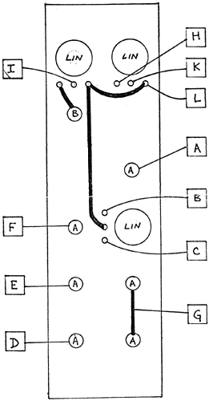

VC PHASER. PC board No. 2565PS Please observe the precautions outlined in our manual when testing this modulel Testing the PHASER should be done with the help of two auxiliary modules: 1. a VCO or other source of audio frequencies. (White noise is excellent) 2. a source of medium to fast moving control voltages such as theVC SLEW GEN., the POS. and/or NEG. SLEW, the ENVELOPE GENERATOR, the RANDOM VOLTAGE GEN., the SHOOTH & STEPPED GEN. etc... Plug the Audio source into the PHASER'S input (diamond) listening to the "mix" output on suitable monitoring equipment. Set the "Mix" knob to the center position (top-most knob). Turning the internal range control (lowest right-hand knob) should effect an audible phasing effect, most audible in mid-range frequencies. Leaving the above patch intact, plug the control voltage source into the VC input, turning its processing control fully CW (both knob and jack are at the bottom right of ths module). Turn the internal range knob so that the control voltage's effect may be heard Turn the processing knob to check whether it is properly working to control the amount of effect. Leaving internal and processing knobs at maximally effective positions, turn the "mix" knob to the right to obtain a vibrato effect (only works with a VCO, not with noise). Turn it to the left to get an increasing amount of the input signal Fully CCW, the "mix" knob will effect no phasing whatsoever. Test the 360°, 720° and 1080° outputs to obtain; a progressively greater vibrato effect as you qo from one to the other. These outputs are "pure" phase modulated signals, unlike the "mix" output which can also output the phasing effect resulting from a mix of the original with phase-delayed signals. Note that the PHASER is a fairly subtle module whose effects depend on several factors (VCO frequency, CV rate,and especially, settings of the PHASER'S controls) and takes getting used to.
|